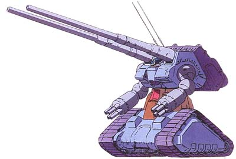

| RX-75 Guntank MPT Land Combat Artillery Support Earth Federation Mobile Suit |
|
|  | |
General and Technical Data |
|
|
Model number: RX-75 Code name: Guntank Mass Production Type Unit type: artillery support mobile suit Operator: Earth Federation Dimensions: overall height 15.6 meters; head height 15.0 meters Weight: empty 56.0 metric tons; max gross 80.0 metric tons Construction: titanium/ceramic composite Powerplant: Minovsky type ultracompact fusion reactor, output rated at 878 kW Propulsion: engine-driven caterpillar treads: 2 Performance: maximum thruster acceleration 1.19 G, maximum ground running speed 125 km/h Equipment and design features: sensors, range 6000 meters Optional equipment: 2 x crane arm with heavy lifting winch, replaces 120mm howitzers; dozer blade, attached to glacis plate Fixed armaments: 2 x 120mm howitzer, fire-linked, mounted on backpack; 2 x 4-barrel 105mm machinegun, mounted on arms Magnetic Storage Racks: 0 |
 RPG quick stats sheet
RPG quick stats sheet | Technical and Historical Notes | |
|
Widely regarded as the most underappreciated mobile suit of the original three Project V mobile suits, the Guntank, being hardly a mobile suit at all, rarely recieves any credit. Despite this, following limited-production runs of scaled down Gundam and Guncannon units, some voices inside the Federation Army pushed for a Guntank production as well. The result of this lobbying was the drastically reworked Guntank Mass Production Type.
In comparison to the original, the Guntank MPT is almost an entirely different mobile suit. Firstly, the complicated and expensive Core Block System, incorporating an FF-X7 Core Fighter, was deleted from the design all together. However, this also allowed the new model Guntank to rotate at the waist, giving it a much greater firing arc. The armor around the torso was substantially increased, providing extra protection for the driver inside the Guntank's hull. Additionally, the self-contained ammunition magazines were replaced with a large, exposed container on the Guntank's back which would lower into the proper position before firing. This also made it possible for the ammunition to be reloaded mid-combat, essentially allowing the Guntank to continually dump its howitzers at a target. Finally, the limited-capacity missile launchers in the Guntank's arms were replaced with quadruple large-caliber vulcan guns. A fun little addition, the Guntank can also be equipped with a pair of high-tension crane arms in place of its howitzers to serve as a recovery unit for disabled mobile suits. |
|